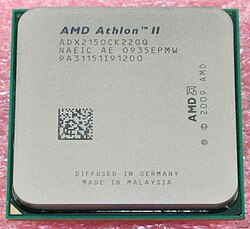
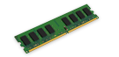
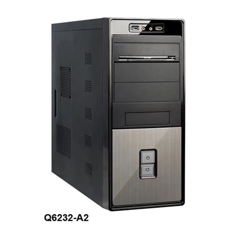
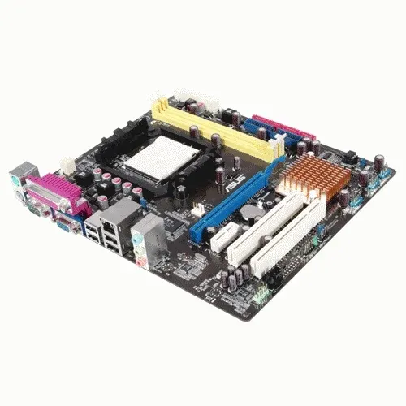
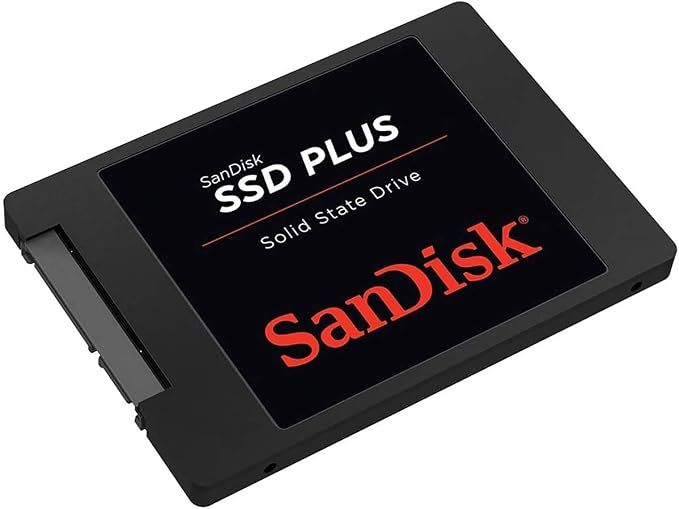
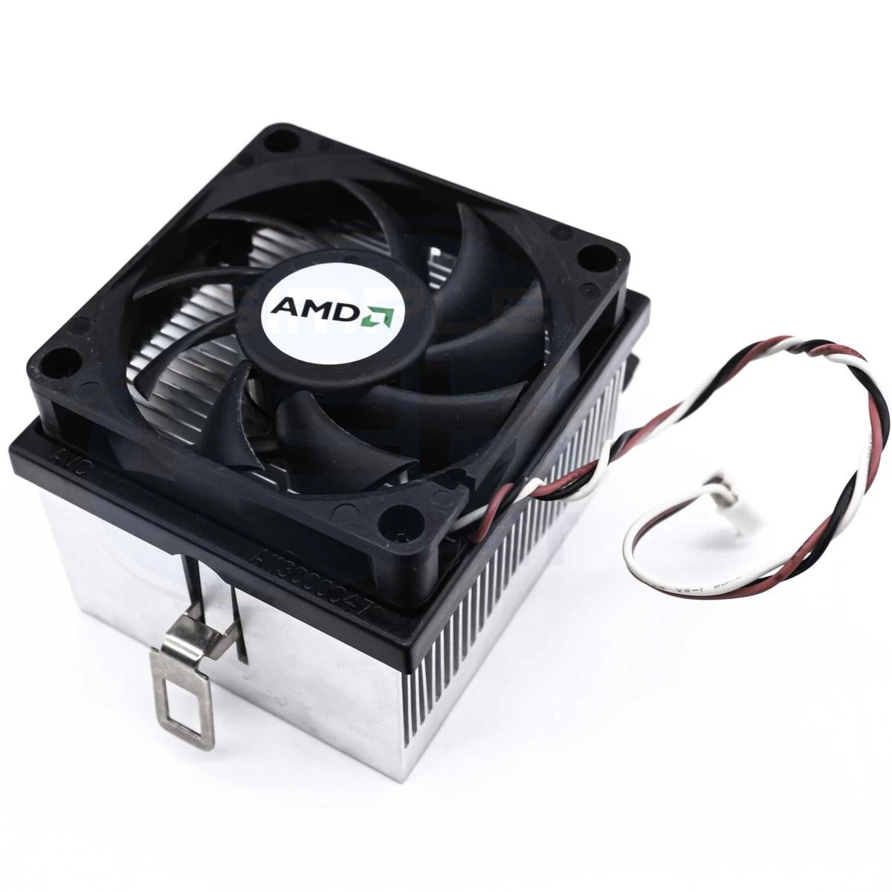
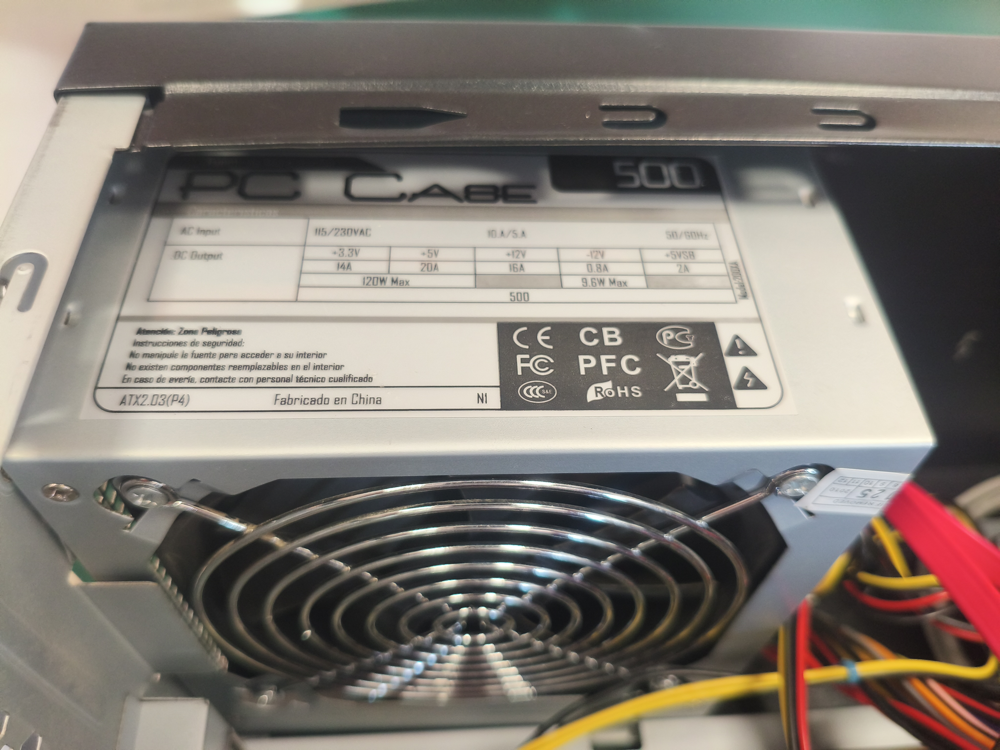
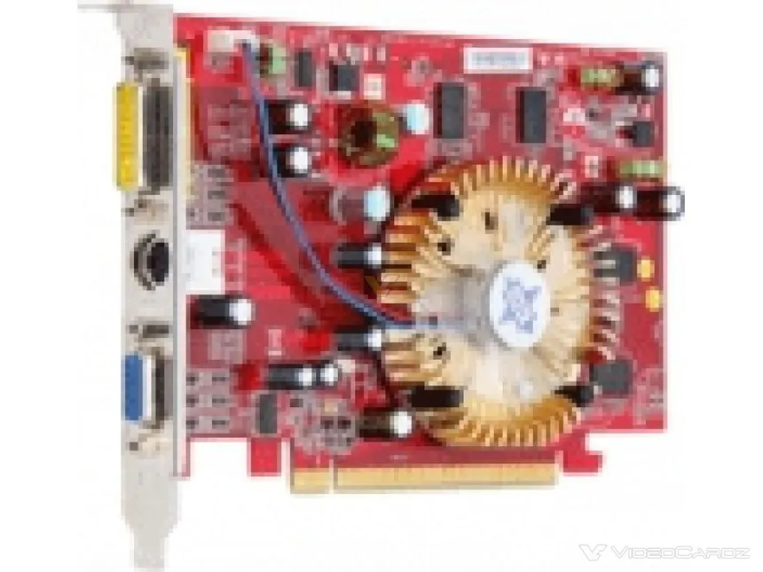
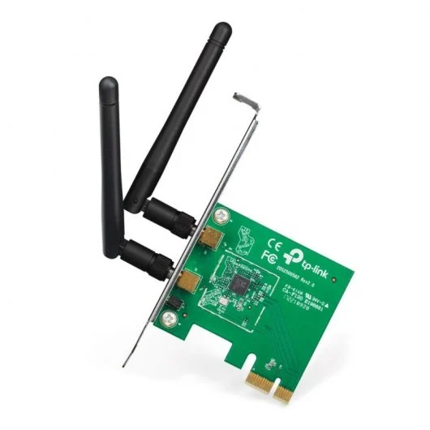

Inventario Equipo01
| ID | Categoría | Marca | Modelo | Estado | Cantidad | Especificaciones | Imagen | |
|---|---|---|---|---|---|---|---|---|
| Parámetro | Valor | |||||||
| CPU_01 | Procesador | AMD | * Procesador AMD Athlon II X2 250 | Funciona | 1 | Nombre | AMD Athlon™ II |
 |
| Familia | AMD Athlon™ II Processors | |||||||
| Serie | AMD Athlon™ II X2 Desktop Processors | |||||||
| Formato | Desktop | |||||||
| Nombre de código anterior | Regor | |||||||
| N.º de núcleos de CPU | 2 | |||||||
| N.º de subprocesos | 2 | |||||||
| Reloj base | 3.0GHz | |||||||
| Caché L1 | 256KB | |||||||
| Caché L2 | 2MB | |||||||
| Caché L3 | N/A | |||||||
| TDP predeterminada | 65W | |||||||
| Tecnología de procesador para núcleos de CPU | 45nm | |||||||
| Desbloqueado para overclocking | No | |||||||
| Socket de CPU | AM3 (compatible con AM2+) | |||||||
| Temperatura de funcionamiento máxima (Tjmax) | 74°C | |||||||
| Compatibilidad con SO | Windows 7 - 32/64-Bit, Windows Vista - 32/64-Bit, Windows XP, Linux | |||||||
| RAM_09 | RAM | Kingston | KVR800D2N5/2G | Funciona | 2 | Lighting | Non-RGB |
 |
| Tipo de memoria | DDR2 | |||||||
| Factor de forma | DIMM 240 pines (sin búfer, non-ECC) | |||||||
| Colores | Verde | |||||||
| Rank | 2GB (2Rx8) | |||||||
| Velocidades | 800 | |||||||
| Latencias CAS Típicas | 5 | |||||||
| Voltaje de Funcionamiento de Prueba | 1,8V | |||||||
| Velocidad SPD | 800 MT/s (PC2-6400) | |||||||
| SPD CAS Latency | 5-5-5-18 | |||||||
| Voltaje de Funcionamiento SPD | 1.8V | |||||||
| Temperatura de operación | De 0 °C a 85 °C | |||||||
| Dimensions ( L x W x H ) | 133.35 x 30 mm | |||||||
| Weight | No especificado | |||||||
| Garantía | Garantía limitada de por vida | |||||||
| CH-01 | Chasis | Asus | Codegen Q6232-A2 | Funciona | 1 | Peso | 2800 g |
 |
| Dimensiones | 173 x 420 x 410 mm (An x Pr x Al) | |||||||
| Tamaño | Minitorre | |||||||
| Formato placas base | MicroATX | |||||||
| Longitud máxima VGA | No especificado | |||||||
| Altura máxima cooler CPU | No especificado | |||||||
| Soporte fuente de alimentación | No especificado (fuente propietaria) | |||||||
| Bahías externas | 1x 5.25" (unidad óptica) | |||||||
| Bahías internas | No especificado | |||||||
| Slots de expansión | 4 | |||||||
| Ventilador frontal | No especificado | |||||||
| Ventilador lateral | No especificado | |||||||
| Ventilador trasero | No especificado | |||||||
| Puertos I/O | USB frontales, lector de tarjetas, HD Audio + Mic | |||||||
| Fuente incorporada | 500W PSU | |||||||
| Conectores Fuente de alimentación incluida | 1x ATX 24 pin / 1x EPS 8 pin | |||||||
| PB_01 | PLACA BASE | ASUS | ASUS M2N68-AM Plus | Funciona | 1 | Procesador | AMD AM2 Plus |
 |
| Chipset | NVIDIA GeForce 7025 / nForce 630a | |||||||
| Memoria | 2 zócalos DIMM compatibles con hasta 8 GB de memoria del sistema Compatible con módulos de memoria DDR2 1066(O.C.) / 800 / 667 MHz Un-buffered, ECC y no ECC Arquitectura de memoria de doble canal * Por una limitación de las CPU AMD, DDR2 1066 solo es compatible con CPU AM2+ con un módulo DIMM por canal | |||||||
| Gráfica Integrada | GPU NVIDIA GeForce 7025 integrada (Programmable Shader Model 3.0, DirectX 9) 1 puerto D-Sub, con resolución máxima de 1920x1440@75 Hz Memoria compartida máxima de 256 MB | |||||||
| Audio | Códec Realtek® ALC662 de audio de alta definición 6 canales Compatible con detección de conectores (Jack-Detect) y multi-streaming | |||||||
| LAN | Realtek® RTL8211CL Gigabit LAN (10/100/1000 Mbps) | |||||||
| Zócalos de Expansión | 1 ranura PCI Express x16 1 ranura PCI Express x1 2 ranuras PCI | |||||||
| Interfaz de almacenamiento | Chipset: 1 conector UltraDMA 133/100 (IDE) 4 conectores SATA 3Gb/s Compatible con RAID 0, RAID 1, RAID 5, RAID 10 y JBOD | |||||||
| USB | 10 puertos USB 2.0/1.1 (6 disponibles mediante los conectores USB internos, 4 en el panel trasero) | |||||||
| Conectores Internos E/S | 1 conector de alimentación principal ATX de 24 pines 1 conector de alimentación ATX 12V de 4 pines 1 conector para ventilador de CPU 1 conector IDE 4 conectores SATA 3Gb/s 3 conectores USB 2.0/1.1 (6 puertos adicionales) 1 conector del panel frontal 1 conector de audio del panel frontal 1 conector S/PDIF Out 1 conector CD In 1 conector para altavoz 1 puente Clear RTC RAM | |||||||
| Panel E/S Trasero | 1 puerto PS/2 para teclado 1 puerto PS/2 para ratón 1 puerto paralelo 1 puerto D-Sub 1 puerto RJ-45 4 puertos USB 2.0/1.1 3 conectores de audio | |||||||
| Controlador E/S | No especificado | |||||||
| Monitorización Hardware | Detección de temperatura de CPU / sistema / puente norte Detección de velocidad de ventiladores de CPU / sistema / fuente de alimentación CPU Q-Fan (control de velocidad del ventilador) | |||||||
| BIOS | Memoria Flash ROM de 8 Mb AMI BIOS PnP, DMI 2.0, WfM 2.0, ACPI 2.0a, SM BIOS 2.5 | |||||||
| Otras Características | ASUS Q-Fan ASUS CrashFree BIOS 3 ASUS EZ Flash 2 ASUS MyLogo 2 ASUS AI NET 2 SFS (Stepless Frequency Selection): ajuste de HT de 200 MHz a 300 MHz, ajuste de memoria de 533 MHz a 1066 MHz, ajuste de frecuencia PCIe de 100 MHz a 150 MHz | |||||||
| Bundled Software | ASUS Live Update ASUS PC Probe 2 Controladores y utilidades | |||||||
| Sistema Operativo | Compatible con Windows XP / Vista / 7 (32/64 bits) | |||||||
| Formato | Factor de forma Micro ATX; 24,4 cm x 20,8 cm | |||||||
| Observaciones | Debido a una limitación del chipset, las CPU AM3/AM2+ funcionan a HT1 (1000 MHz). Consulta www.asus.com para ver la lista de CPU compatibles y la lista de memorias homologadas (QVL). | |||||||
| DD_06 | DISCO DURO | SanDisk | Disco SSD SanDisk PLUS 240GB | Funciona | 1 | Capacidades | 240 GB |
 |
| Factor forma | 2,5" | |||||||
| NAND Flash | TLC | |||||||
| Interfaz | SATA III (6 Gbps) | |||||||
| Controlador | Controlador Estándar | |||||||
| Prestación de lectura | hasta 530 MB/s (240 GB) | |||||||
| Prestación de escritura: | hasta 440 MB/s | |||||||
| Propiedades | Bajo consumo energético Resistencia shock (1500 G) Operación silenciosa Color negro | |||||||
| Funciones | SMART Command Support TRIM Command Support | |||||||
| V_01 | DISIPADOR DE CALOR | AMD | Disipador Original AMD Ventilador AM2 AM2+ AM3 754 939 FM1 1207 940 | Funciona | 1 | Marca | AMD |
 |
| Modelo | Disipador AM2 AM2+ AM3 754 939 FM1 1207 940 | |||||||
| Tipo | Refrigerador de aire (Top Blower) | |||||||
| Socket compatible | AM2+ | |||||||
| Material del radiador | Aluminio | |||||||
| Diámetro ventilador | 70-80 mm | |||||||
| Número de ventiladores | 1 | |||||||
| Conector ventilador | 4 pines | |||||||
| Color | Negro | |||||||
| Iluminación LED | No | |||||||
| Peso | 400 g | |||||||
| Garantía | 12 meses (Bring-In) | |||||||
| Estado | Original / Recuperado (Grado A) | |||||||
| Compromiso medioambiental | SBTi | |||||||
| FA_03 | FUENTE DE ALIMENTACIÓN | PC CASE | Fuente PC PC Case 200XA Universal 20+4+4-Pin 120W | Funciona | 1 | Puertos e Interfaces | Corriente máxima de entrada: 4A Voltaje de entrada: 200-240V 50/60Hz Voltaje/Corriente de salida: +3.3V - 24A / +5V - 25A / +12V - 26A / -12V - 0.5A / +5VSB - 2.5A Corrección del factor de potencia tipo PFC: Pasivo Tipo de conector de fuente de alimentación 20+4+4-Pin |
 |
| Peso y dimensiones | Ancho: 142 mm Profundidad: 150 mm Altura: 85 mm Peso: 950 g | |||||||
| Enfriamiento | Número de ventiladores: 1 Diámetro de ventilador: 12 cm Ubicación de ventilador: Superior | |||||||
| Diseño | Color del producto: Negro Cableado: Cables planos extra largos | |||||||
| Desempeño | Utilizar con: PC Factor de forma de fuente de alimentación (PSU): ATX Potencia: 500W Nivel de ruido: 14dB Certificaciones: ATX12V, Haswell Ready, CE, ROHS Protecciones: OPP, OVP, UVP, SCP | |||||||
| GPU_05 | Tarjeta gráfica | ATI | Radeon X1550 Super 512MB DDR2 | Funciona | 1 | Fabricante | ATI (AMD) |
 |
| Chipset gráfico | RV516 (Radeon X1550) | |||||||
| Interfaz | PCI Express x16 | |||||||
| Memoria | 512 MB DDR2 | |||||||
| Bus de memoria | 128 bits | |||||||
| Frecuencia núcleo (Core Clock) | 550 MHz | |||||||
| Frecuencia de memoria | 400 MHz (800 MHz efectivos) | |||||||
| Ancho de banda de memoria | 12,8 GB/s | |||||||
| Shaders | 4 Pixel Shaders 2 Vertex Shaders | |||||||
| TMUs / ROPs | 4 TMUs 4 ROPs | |||||||
| DirectX / OpenGL | DirectX 9.0c OpenGL 2.1 | |||||||
| Salidas de vídeo | 1x DVI 1x VGA (D-Sub) 1x S-Video | |||||||
| Consumo | 27 W máx. (sin conector de alimentación adicional) | |||||||
| TR_00 | Tarjeta gráfica | ATI | Radeon X1550 Super 512MB DDR2 | Funciona | 1 | Fabricante | ATI (AMD) |
 |
| Marca / Modelo | TP-Link TL-WN881ND | |||||||
| Interfaz | PCI Express 2.0 (x1) | |||||||
| Estándares inalámbricos | IEEE 802.11n IEEE 802.11g IEEE 802.11b | |||||||
| Velocidad inalámbrica | Hasta 300 Mbps (802.11n) Hasta 54 Mbps (802.11g) Hasta 11 Mbps (802.11b) | |||||||
| Antenas | 2x antenas desmontables omnidireccionales (RP-SMA) Ganancia: 2 dBi | |||||||
| Potencia de transmisión | 20 dBm (EIRP) | |||||||
| Tecnología | MIMO (Multiple Input, Multiple Output) | |||||||
| Seguridad | WEP de 64/128 bits WPA/WPA2 Configuración WPS | |||||||
| Modos inalámbricos | Ad-Hoc / Infraestructura | |||||||
| Peso y dimensiones | Ancho: 21,5 mm Profundidad: 120,8 mm Altura: 78,5 mm | |||||||
| Condiciones ambientales | Temp. operativa: 0 - 40 °C Temp. almacenaje: -40 - 70 °C Humedad relativa: 10 - 90% | |||||||
| Compatibilidad | PC (no compatible con Mac) | |||||||